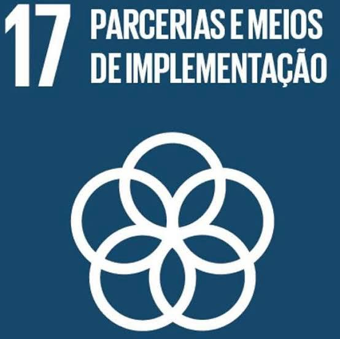

Fortalecer parcerias para alcançar os objetivos globais.
A ODS 17 – Parcerias e Meios de Implementação tem como objetivo fortalecer os meios de implementação e revitalizar a parceria global para o desenvolvimento sustentável. Essa meta reconhece que os desafios globais — como pobreza, mudanças climáticas e desigualdade — só podem ser enfrentados com cooperação entre governos, setor privado, sociedade civil e organizações internacionais.
Um dos maiores Desafios é a falta de recursos financeiros e tecnológicos em países em desenvolvimento, que dificulta a implementação dos demais ODS. Além disso, desigualdades no comércio internacional, dívidas externas elevadas e limitações na transferência de conhecimento e inovação tornam a cooperação mais difícil e desigual.